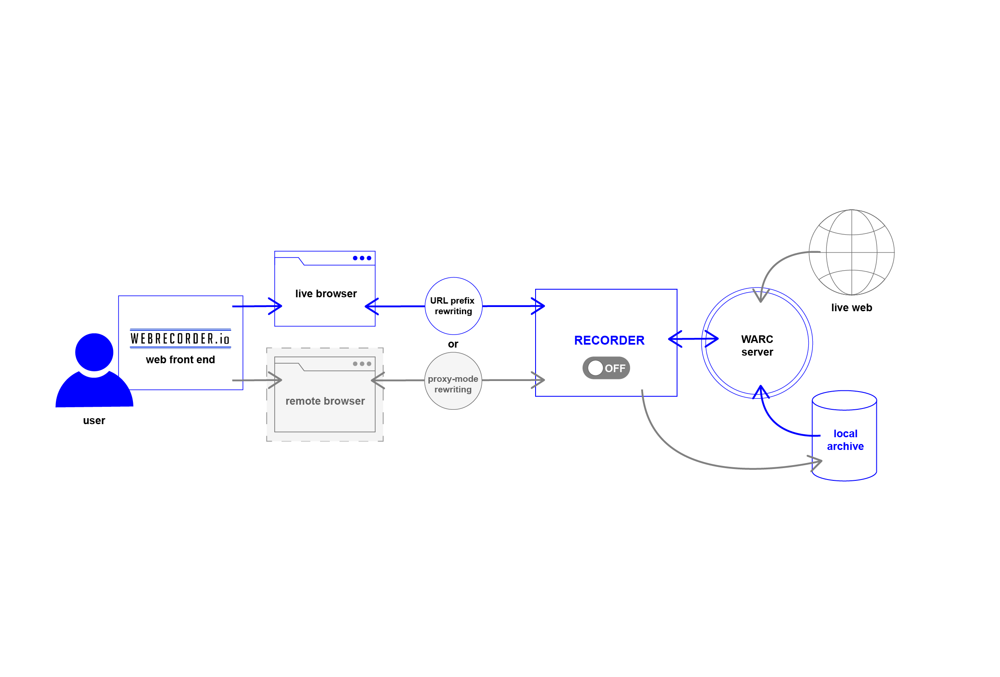
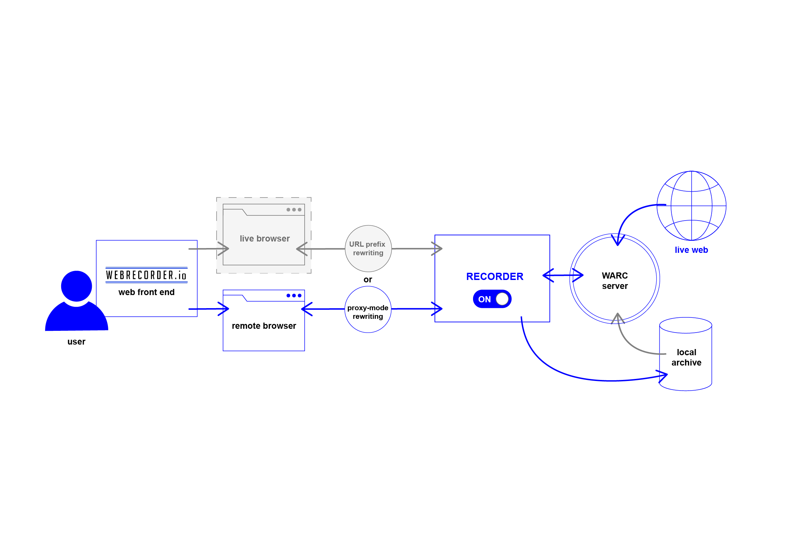
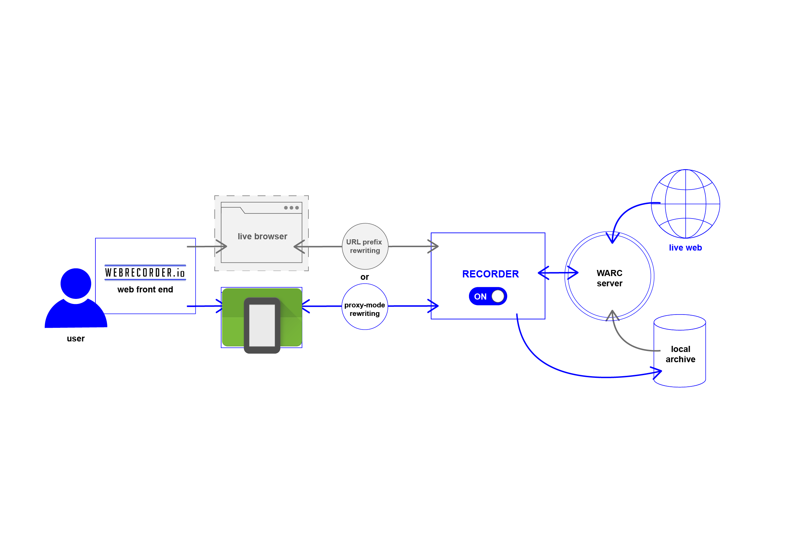

Preservation of Networked Content
Web Recording and Emulation
Ilya Kreymer

Web Archiving is
Network Traffic Preservation
- Preserve full HTTP protocol transmission
- Store full request->response conversations
- HTTP transmission stored sequentially
- Standardized ISO WARC format
Classic Web Archiving Approach
- Crawling, or harvesting of URLs
- Crawling policy dictated by complex rules, seeds
- Great for classic web, static documents w/ hyperlinks
- Different toolchain for crawling and access
Problems with Classic Approach
- Crawlers don't run Javascript
- Crawlers miss dynamic JS-created content
- Crawlers can't respond to user interaction
- Crawlers often treat URLs as files to be downloaded
URLs are not files!
- Preserving a URL is preserving one request/response
- Same URL can represent different content
- Personalized news.google.com, any social media
- Different URLs can represent the same content!
- URLs with cache-busting params
- URLs may be context dependent
- Must record URLs in the users' context
Symmetrical Archiving
Unified architecture to record and replay
Replay Mode: 
Symmetrical Archiving
Unified architecture to record and replay
Record Mode:

Symmetrical Archiving
Unified architecture to record and replay
Using Remote Browsers: 
Web Archive Replay
- A network traffic replay problem
- Must find "best response" for each request
- Simplest case: exact URL match
- Request for http://example.com/
- Find 1 exact match for http://example.com/
- Send Archived Response for http://example.com/
Web Archive Replay
- Fuzzy matching:
- Request for http://example.com/some/path?_=1234
- No Match for http://example.com/some/path?_=1234
- Apply prefix matching, match ignoring query param
- Found match for http://example.com/some/path?_=5678
- Return capture of http://example.com/some/path?_=5678
Web Archive Replay Fuzzy Matching
- More difficult cases:
- Match some query arguments, ignore others
- Match by HTTP payload (POST, PUT)
- Match by header, custom format
- No single solution, need context-dependent rules
Challenges Ahead: Video
- Adaptive streaming formats (DASH, HLS)
- One video is not one URL
- Video consists of multiple chunks
- Each chunk may be one of several URLs
- Example: BBC Video
- Example: Live Stream
Challenges Ahead: Mobile
- Mobile Web Content
- Mobile Apps
- Report: Android overtakes Windows as the internet’s most used operating system (TechCrunch)
- Can't ignore the mobile web!
Symmetrical Archiving
Unified architecture to record and replay
Using Remote Browsers:
Symmetrical Archiving
Unified architecture to record and replay
Using Remote Android Emulator! 
Demo: Web Archive + Android Emulator
- Record / Replay Mobile Web Traffic to WARC
- Record / Replay Mobile App Traffic to WARC?
- Emulators are not just for old software
- Network request/response matching can be challenging